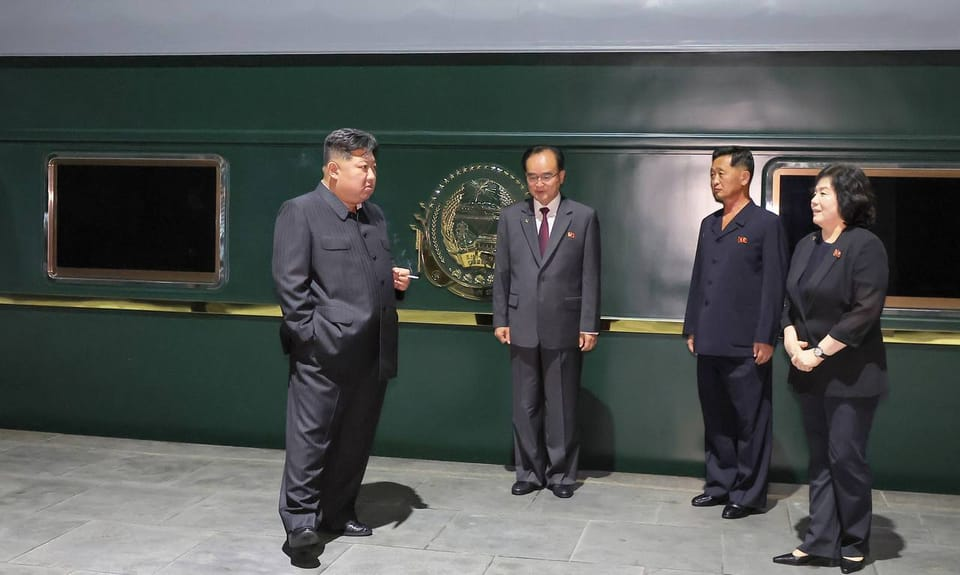

世界苦茶09月02日新闻 | 31条 | 房地產8月繼續下跌

房地產8月繼續下跌 | 國民黨將組團訪華 | 韓日都創造最熱夏天記錄 | 中俄希望建立“全球新秩序”
每日三條新聞解析
苦茶数据
美元兑人民币：7.14（昨日7.12，前日7.12）
美元兑日元：147.66（昨日147.18，前日146.82）
上证指数：3853（昨日3875，前日3857）
标普500指数：休市（昨日6460，前日6501）
比特币：109586（昨日108777，前日108696）
布伦特原油：68.44（昨日67.75，前日67.48）
中国新闻
• 上合组织重申二战历史意义 ：上海合作组织成员国领导人在声明中说，二战胜利的意义，在于人们永远不会忘记反人类罪。据新华社报道，上合组织成员国领导人星期一在天津举行的元首理事会议签署并发表天津峰会宣言，同时也发表关于第二次世界大战胜利和联合国成立80周年的声明。声明指出，第二次世界大战由妄图独霸世界的势力挑起，他们剥夺其他民族的自由、民族文化、身份认同和传统价值观。这场残酷大屠杀表明，纵容纳粹主义、法西斯主义、军国主义，煽动种族、民族、宗教仇恨、对立和歧视危害巨大。 （翻評：其實想說的是，根據二戰後秩序，俄羅斯入侵烏克蘭，中國想要入侵臺灣是合理的。）
• 金正恩专列启程访华 ：韩国媒体报道，朝鲜最高领导人金正恩已搭乘火车专列，从平壤启程前往中国。韩联社报道，朝鲜消息人士星期一透露，金正恩当天下午搭乘火车，动身访华。列车预计当晚越国朝鲜国境，星期二抵达中国首都北京。金正恩这次罕见出访，是应中国国家主席习近平邀请，参加9月3日的中国纪念抗日战争胜利80周年阅兵式。
• 习近平呼吁推动经济全球化 ：中国国家主席习近平呼吁上海合作组织成员国继续坚持拆墙不筑墙、融合不脱钩，推动经济全球化朝着更加普惠包容的方向发展。习近平星期一主持在天津举行的“上海合作组织＋”会议并发表讲话时说，上合组织要继续坚持不结盟、不对抗、不针对第三方原则，构筑地区安全共同体，坚定做动荡世界中的稳定力量。他指出，世界反法西斯战争胜利和联合国成立80年后，和平、发展、合作、共赢的时代潮流没有变，但冷战思维、霸权主义、保护主义阴霾不散，新威胁新挑战有增无减。习近平形容，世界进入新的动荡变革期，全球治理走到新的十字路口。
• 国民党拟组团访大陆九天 ：政治立场亲蓝的台湾媒体报道，国民党将组团访问中国大陆九天，期间将停留北京。TVBS新闻网星期一报道，在台湾大罢免落幕后，国民党中央将由党秘书长黄健庭领军，组团访问大陆九天。他们一行人将从9月10日起登陆深圳，随后前往台商众多的东莞，接着直飞沈阳，最后在北京停留一夜，9月18日返回台北。报道称，国民党主席朱立伦曾在2015年以党主席身份访问北京，而他的继任者洪秀柱也在2016年出席两岸经贸文化论坛。然而，自2017年后，国共论坛已停办九年。此次国民党中央组团再度访问大陆，被外界解读可能意在修补两岸关系。
• 洪秀柱等将出席九三阅兵 ：台湾国安知情人士透露，国民党前主席洪秀柱、前秘书长李乾龙等将出席九三阅兵。民进党立委批这么做是敌我不分，伤害台湾人民感情。综合ETtoday新闻云和台湾《自由时报》报道，中国大陆星期三将在北京举行抗战胜利80周年阅兵式，俄罗斯总统普京、朝鲜最高领导人金正恩与伊朗总统佩泽希齐扬等均将出席。台湾国安知情人士称，国民党前主席洪秀柱、国民党前秘书长李乾龙、国民党中常委何鹰鹭、新党正副主席吴成典与李胜峰，以及劳动党主席吴荣元、统一联盟党副主席李尚贤等人将出席九三阅兵。
• 上海高温纪录刷新至26天 ：中国上海已连续26天出现高温天气，刷新了自1926年以来的连续高温日数纪录。据中新社报道，8月31日一早，上海中心气象台再发高温黄色预警信号。这意味着，申城再度打破最长连续高温日、8月最多高温日数两项气象纪录。自1873年上海有气象记录以来，1926年7月22日至8月14日曾连续24天高温。这项纪录直到今年被打破：8月30日，上海达成25天连续高温；8月31日，上海再度以26天连续高温刷新纪录。
• 中央农办整治农村高额彩礼 ：中央农办9月1日在宁夏吴忠开“部分省份农村高额彩礼问题综合整治经验交流会”。习近平已作出系列指示批示。农村高额彩礼问题是文化习俗、性别失衡、城乡差距等多方面因素交织造成的，必须持续用力、久久为功。因地制宜提出彩礼倡导性标准，出台低彩礼零彩礼激励措施，选树典型，清理网络不良有害信息，引导群众理性对待彩礼给付。探索建立长效机制，提升乡村宜居宜业水平，逐步消除农村高额彩礼问题滋生蔓延的土壤。
亚太印太新闻
• 蔡志弘参选国民党主席 ：国民党主席参选者又增一人，台湾前国代、海基会前顾问蔡志弘盼当选后，为促进两岸和平与确保台湾经济繁荣贡献心力。台湾联合新闻网星期一报道，蔡志弘表态角逐国民党主席，并将于星期五上午举行参选记者会。据介绍，蔡志弘曾任第三届国大代表，期间拒绝执行“两国论”入宪，并受命组团访问中国大陆，商讨结束两岸敌对状态。蔡志弘罗列他决定参选的三点原因。他认为，两岸危机重重，他有处理、斡旋美中台关系的实务经验，若当选将访问大陆，推动国共领导人会面，向对岸表达台海和平的重要性。
• 韩日今夏创最热纪录 ：官方数据显示，韩国和日本今年都经历了有记录以来最热的夏季。法新社报道，韩国气象厅星期一公布的数据显示，今年6月1日至8月31日期间，韩国平均气温达到25.7摄氏度，是自1973年有记录以来的最高值；此前同期最高纪录为25.6摄氏度。在上述三个月内，韩国高温天数多达28.1天，位列1973年以来第三高。
• 台立法院党团交接释善意 ：台湾在野的国民党立法院党团星期一举行干部交接典礼，邀请民进党立法院党团总召柯建铭以及民众党立法院党团总召黄国昌参与。柯建铭在场称“两军交战不斩来使”，并表示他是来递橄榄枝的，进一步释放善意。综合中时新闻网、《联合报》、《自由时报》等台媒报道，台湾立法院迎来大罢免后的新会期，国民党立法院党团星期一上午举行干部交接典礼，柯建铭和黄国昌也到场。会前，国民党立法院党团总召傅崐萁与柯建铭、黄国昌握手和交流。柯建铭说，他此次前来是递橄榄枝的，并称“明知山有虎，偏向虎山行”，两军交战不斩来使。
• 台总统府任命新国安人事 ：台湾总统府公布国家安全会议新任人事，总统特聘原国安会副秘书长徐斯俭及副秘书长刘得金出任咨询委员，民进党台北市议员赵怡翔、总统府发言人李问接任国安会副秘书长职务。台湾总统府星期一发布新闻稿，总统府发言人郭雅慧说 ，为强化国际、区域情势、境外敌对势力渗透及灰色地带挑战的因应，总统赖清德任命这四位国安团队新职，并称有关任命即日起生效。总统府称，徐斯俭为现任国安会副秘书长，曾任外交部政务次长、台湾民主基金会执行长、中研院政治学研究所副研究员等，学术及实务历练完整，娴熟外交、两岸政治等事务；刘得金为现任国安会副秘书长，曾任国防部总督察长、陆军副司令、陆军第八军团指挥官等，经历丰厚，熟稔国际军事合作、情报研判与国防战略分析。
科技新闻
• 特斯拉中国Model 3降价1万 ：美国电动车巨头特斯拉在中国销售的Model 3长续航后轮驱动版车型，在发售不到一个月后下调价格。据凤凰网科技报道，特斯拉官方商城星期一显示，Model 3长续航后轮驱动版车型现已降价至25.95万元人民币。报道称，这款车型在8月12日正式发布，是特斯拉当前续航最强的车型，当时的售价是26.95万元起。这意味着，发售不到一个月即降价1万元。
• OpenAI公司计划在印度建设大型数据中心： OpenAI公司正计划在印度建造一座大型新数据中心，这可能标志着 “星际之门” 在亚洲推进的重要一步。据知情人士透露，OpenAI目前正在寻找当地合作伙伴，计划在印度建立一座容量至少为一千兆瓦的数据中心。该数据中心有可能成为印度规模最大的数据中心之一，目前包括微软、谷歌，以及亚洲首富在内的科技巨头，都已在印度投资建设此类设施。目前，OpenAI这一潜在项目的具体选址和时间规划尚不明确。知情人士表示，该公司首席执行官萨姆·奥尔特曼本月访问这个南亚国家时，或许会宣布该数据中心的相关计划，但目前这些规划仍存在变数。
财经新闻
• 特朗普称印或零关税美货 ：美国总统特朗普说，印度提议对美国商品关税降至零。路透社报道，特朗普星期一在社媒平台真相社交发文，直指美印贸易关系不平等。他表明，印度作为最大“客户”，向美国“倾销海量商品”，而美国对印出口却“微乎其微”，“这种完全单边的关系已持续数十年”。他写道：“究其根源，是因为印度至今仍对我们征收全球最高关税，导致美国企业难以进入印度市场。这完全是一场单方面的灾难！”
• 上合组织支持多边贸易体制 ：上海合作组织成员国领导人星期一在中国天津举行元首理事会会议，并发表宣言提出，支持维护和加强非歧视的多边贸易体制。据新华社报道，成员国在宣言中认为，有必要对联合国进行相应改革，保障发展中国家在联合国治理机构中的代表性，使联合国适应当今政治和经济现实需要。成员国主张尊重各国人民自主选择政治、经济、社会发展道路的权利，强调相互尊重主权、独立、领土完整，平等互利，不干涉内政，不使用或威胁使用武力原则是国际关系稳定发展的基础。
• 拉加德忧法政局动荡风险 ：欧洲央行行长拉加德对法国政府可能倒台的风险表示担忧，她警告称，欧元区任何国家的政治动荡，都会给市场带来压力。法国总理贝鲁上周突然宣布对政府举行信任投票，而大多数反对党都表态会投下反对票，政府很有可能就此下台。拉加德星期一告诉法国古典广播电台：“欧元区任何国家政府倒台的风险，都令人担忧。”她表明：“政治局势发展和政治风险的出现，对经济和金融市场评估国家风险具有明显影响，因此我们感到忧心。”
• 阿里云否认采购15万片GPU ：阿里巴巴旗下阿里云证实，网传公司向寒武纪采购15万片先进处理器晶片的消息不实；寒武纪星期一股价低开短线跳水。综合中国每日经济新闻、证券时报网等媒体报道，日前市场传言称阿里云通义千问大模型面临算力缺口，阿里紧急追加寒武纪思元370晶片订单至15万片，以填补英伟达H20晶片断供缺口等。阿里云星期一回应表示，阿里云确实一云多芯支持国产供应链，但传言阿里采购寒武纪15万片GPU的消息不实。
• 比亚迪利润下滑股价大跌 ：中国电动车巨头比亚迪股价星期一大跌，此前公司报告称季度利润三年多来首次下滑，主要受到困扰中国汽车行业的激烈价格战冲击。据路透社报道，这家全球最大电动车生产商报告称，第二季度净利润同比大跌30%，降至64亿元人民币。这与第一季度利润实现翻番形成鲜明对比。比亚迪星期一在港股和深股早盘均跌约5%。其中，港股开盘一度下挫8%，创下自5月26日以来最大单日跌幅。
• 中国8月二手房价再度下跌 ：一项民间调查显示，中国8月份二手房价格再度下跌，新房价格则小幅回升，凸显出在一系列支持措施出台后，受危机冲击的房地产市场依然疲弱。中指研究院星期一在官方微信公众号发文，根据中国房地产指数系统百城价格指数对中国100座城市新建、二手住宅销售市场及50座城市租赁市场的调查数据，8月百城新建住宅均价为每平方米1万6910元人民币，在部分城市改善项目入市带动下，环比结构性上涨0.20%，同比上涨2.73%。二手房方面，“以价换量”现象延续，8月百城二手住宅均价为每平方米1万3481元，环比下跌0.76%，同比下跌7.34%。租赁住宅方面，毕业季效应逐渐消退，住房租赁需求释放节奏放缓，重点50城住宅平均租金环比跌幅略有扩大，8月50座城市住宅平均租金为每月每平方米34.88元，环比下跌0.15%，同比下跌3.76%。
• 百强房企8月销售额降17.6% ：中国百强房地产企业今年8月的实现销售操盘金额同比降低17.6%，房价下跌以及两大一线城市加码楼市刺激未能提振需求。克而瑞地产研究星期天在官方微信公众号公布的数据显示，今年8月，百强房企实现销售操盘金额2070.4亿元人民币，环比降低1.9%，同比降低17.6%，同比降幅相对于7月收窄了6.7个百分点，单月业绩规模继续保持在历史较低水平。这也是百强房企实现销售操盘金额连续第六个月下降。克而瑞地产研究称，累计业绩来看，百强房企实现销售操盘金额2万零708.8亿元，同比降低13.1%，降幅扩大0.6个百分点。
• 韩国官员透露韩美贸易谈判秘辛，称峰会前曾因投资基金问题“激烈”交锋 ：韩国总统政策室室长金容范表示，在美国总统特朗普与韩国总统李在明于8月25日举行峰会之前，韩国与美国在作为贸易协议一部分而商定的3500亿美元基金的细节问题上出现重大分歧。他表示，美国试图利用此次峰会向首尔加大施压，要求其提供有关投资细节的文件，此举招致首尔官员的抵制，并引发了对峰会结果的担忧。
• 台积电2025年第二季度市场份额突破70%： TrendForce 报告称，2025 年第二季度，台积电的市场份额为 70.2%，高于 2025 年第一季度的 67.6%。这一增长得益于多种因素，受多国家补贴以及智能手机、人工智能、PC和服务器产品积极备货的推动，整个行业收入环比增长了14.6%。三星是台积电在晶圆代工领域的唯一竞争对手，其营收市场份额在 2025 年第二季度从 7.7% 下降到 7.3%，但其季度营收增长了 9.2%，其 2nm GAA 工艺有望强势反弹。
俄乌战争
• 乌前议长遇刺身亡疑俄涉案 ：乌克兰前国会议长帕鲁比遭枪击身亡，当局逮捕一名嫌疑人，怀疑俄罗斯参与谋杀。乌克兰国家警察局长维赫夫斯基星期一在脸书发文说，枪手伪装成快递员，于上星期六在西部城市利沃夫对帕鲁比发动袭击，连开八枪。维赫夫斯基说，枪手经过长期准备、观察、策划，最终扣动扳机，“此事存在俄罗斯干预”。不过他并未提供证据。
• 普京称与特朗普达成谅解 ：俄罗斯总统普京说，他上月与美国总统特朗普在阿拉斯加峰会达成“谅解”，为乌克兰和平打开道路，他将与出席上海合作组织成员国元首理事会会议的各国领导人就此进行讨论。综合路透社和法新社报道，普京在星期一举行的上合组织天津峰会说：“我们高度赞赏中国和印度为促进解决乌克兰危机所做的努力和提议。我希望最近在阿拉斯加举行的俄美会谈达成的谅解也能有助于实现这一目标。”普京称，他已在星期天向中国国家主席习近平详细介绍他与特朗普会谈的成果，并指解决冲突的工作“已经展开”。他将在与习近平及其他领导人的双边会谈中提供更多详情。
• 冯德莱恩专机遭俄疑似干扰 ：欧盟委员会主席冯德莱恩的飞机8月31日在飞往保加利亚的途中遭到疑似来自俄罗斯的GPS干扰，飞机安全降落在保加利亚。欧盟发言人未透露更多细节，但表示这将促进欧盟加强防御能力和支持乌克兰。冯德莱恩也将继续访问与俄罗斯和白俄罗斯接壤的欧盟国家。保加利亚政府称，冯德莱恩的飞机在接近南部城市普罗夫迪夫时丢失GPS信号，促使空中交通管制改用地面导航系统来确保飞机安全着陆。
• 习近平与普京共建“全球新秩序”，挑战美国主导地位： 中国国家主席习近平周一在地区峰会上敦促各国领导人利用其“超大规模市场”。俄罗斯总统普京则表示支持习近平建立新的全球安全和经济秩序的雄心，该秩序将对美国构成挑战。除斯洛伐克总理罗伯特·菲乔外，本周出席阅兵式的26位外国元首和政府首脑中将没有西方领导人。在为期两天的上海合作组织峰会开幕式上，习近平向20多位世界领导人致辞时表示，上海合作组织已成为新型国际关系的典范。他表示：“我们应该倡导平等有序的世界多极化，推动包容包容的经济全球化，推动构建更加公正合理的全球治理体系。”
国际新闻
• 学者协会认定以色列种族灭绝 ：全球顶尖种族灭绝问题学者协会通过一项决议，称认定以色列在加沙实施种族灭绝已符合法律标准。路透社报道，国际种族灭绝学者协会星期一发表声明说，协会通过决议认定，以色列在加沙的政策和行动，符合1948年《联合国防止及惩治灭绝种族罪公约》第二条对种族灭绝的法律定义。协会拥有500名成员，86%的投票者支持这项决议。
• 胡塞武装再拘押联合国人员 ：联合国特使说，至少11名联合国工作人员星期天在也门首都萨那和荷台达省遭胡塞武装逮捕。联合国也门问题特使格伦德贝里星期天晚上说，胡塞武装人员闯入联合国在当地的办事处并查封资产。加上这次，被胡塞武装关押的联合国工作人员总数达34人，其中一些人已被关押数年。今年早些时候，一名联合国工作人员在萨达省北部遭关押期间死亡。格伦德贝里呼吁胡塞武装立即无条件释放所有被关押的联合国及其他国际援助组织工作人员。
• 美法院叫停遣返危地马拉童 ：美国华盛顿特区联邦地区法院法官8月31日临时叫停特朗普政府遣返危地马拉儿童的行动。一架搭载危地马拉儿童的飞机起飞后折返。8月31日凌晨，移民权益组织美国国家移民法律中心向位于首都华盛顿特区的联邦地区法院提出紧急请求，要求叫停联邦政府当天向危地马拉遣返数十名儿童的行动。联邦地区法院法官斯巴克·苏克拿南说，凌晨2时30分左右她被叫醒审理这起案件，随后颁布临时禁制令，禁止遣返这些儿童。知情人士披露，一架搭载危地马拉儿童的飞机在禁令颁布时已经起飞，这架飞机后来及时折返。
• 阿富汗地震逾800死数千伤 ：阿富汗东部地震死亡人数已超过800人，另有2000多人受伤，大规模救援行动正在进行。法新社报道，阿富汗塔利班当局星期一说，前一晚的地震已造成800多人丧生，仅震中附近的库纳尔省偏远地区，就有约800人遇难、2500人受伤；邻近的楠格哈尔省有12人遇难、255人受伤。另据新华社星期一早些时候引述阿塔内政部发言人卡尼报道，地震灾区大量民房坍塌，救援团队正加紧奔赴灾区。
• 马杜罗誓言，如果加勒比海地区的美军袭击委内瑞拉，他将宣布成立“武装共和国”： 委内瑞拉总统尼古拉斯·马杜罗周一表示，如果委内瑞拉遭到美国政府部署在加勒比海地区的军队的袭击，他将“根据宪法宣布成立武装共和国”。马杜罗在新闻发布会上发表上述言论之际，美国政府本周将加强其在委内瑞拉附近海域的海上力量，以打击来自拉丁美洲贩毒集团的威胁。美国尚未表示其部署的数千名人员有任何计划进行陆地入侵。尽管如此，马杜罗政府仍作出回应，在其沿海地区以及与邻国哥伦比亚的边境部署军队，并敦促委内瑞拉民众加入民兵组织。“面对这种最大程度的军事压力，我们已宣布为保卫委内瑞拉做好最大程度的准备，”马杜罗在谈到此次部署时表示，他称其为“一种过分的、毫无道理的、不道德的、绝对犯罪且血腥的威胁。”